<nav id="sideMenu" class="side-menu">
  <div class="menu-handle" onclick="toggleMenu()"></div>
  <button class="close-btn" onclick="toggleMenu()">←</button>

  <h3>
    
  </h3>

  <a href="Monitor.html">Monitor</a>
  <a href="productos.html">Productos</a>
  <a href="MsjHitachi.html">Mensajes Hitachi</a>
  <a href="Parametros.html">Parámetros de balanza</a>
  <a href="marcas.html">Marcas</a>
  <a href="etiquetas.html">Etiquetas</a>
  <a href="reportes.html">Reportes</a>
  <a href="testing.html">Testing</a>
  
  <div class="nav-config">
    <button class="config-btn" onclick="toggleConfigMenu()">⚙</button>
    <div class="config-menu" id="configMenu">
        <a href="#">Configuración general</a>
        <a href="#">Usuarios</a>
    </div>
</div>
</nav>
